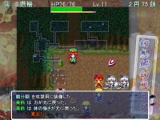
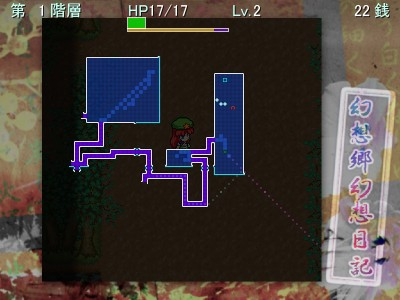

階段を目指せ！
 階段に入ると、次のフロアに進むことができます。
階段に入ると、次のフロアに進むことができます。ただし、フロアが進むにつれて、敵は強くなっていきます。
階段を見つけても、部屋を回ってアイテムと経験値を稼いでから降りるのもいいでしょう。
ターン制
本ゲームはローグライクの例にもれず、ターン制を採用しています。つまり、「自分が1回動くと敵も1回動く」というものです。
「歩く」「攻撃する」「道具を置く」「道具を使う」…あらゆる行動で1ターンが経過します。 しかしこれは逆に言えば、「なにもしなければ相手は動いてこない」ということです。
窮地に陥っても、行動さえしなければ、考える時間はいくらでもあるのです。
「HP」と「満腹度」
美鈴の体力にあたるパラメータとして、「HP」と「満腹度」の2種類があります。HPは、いわゆる体力で、ダメージを受けると減っていき、0になるとたおれる…というものです。
HPは、満腹度がある限り、ターン経過でゆっくりと回復していきます。 もう1つのパラメータである「満腹度」は、その名の通り美鈴のお腹の状態を表しています。
これは行動するたびに少しずつ減っていき、0になるとハラペコになってHPが少しずつ減ってしまいます。
食べ物を定期的に食べて、飢えを防ぐことも大切です。
空間崩壊に注意
ダンジョンの空間は不安定で、同じフロアに長居しすぎると、フロアが崩壊してしまいます。空間崩壊に巻き込まれてしまうと、問答無用で冒険は失敗になります。
一定ターンごとに空間崩壊の兆候を知ることができるので、進むタイミングを見極めましょう。
宴会だ！

ダンジョンにもよりますが、たまに宴会が開かれている部屋があります。宴会の開かれている部屋では、大量の幻影たちがどんちゃん騒ぎをしており、
飲み物はもちろん、余興か何かなのか、道具や罠までもが大量に散らかされています。
うっかり宴会場に足を踏み入れてしまうと、部屋の幻影全員に絡まれてしまいます。
通常では考えられない数の敵を相手にすることになるため苦しいですが、
うまく撃退すれば大きく経験値・道具を稼ぐチャンスです！
宴会の参加者は、美鈴が足を踏み入れるまで、宴会場から出てこないみたいです。
マップのみかた
マップにはフロアの形状だけでなく、アイテムや罠、視界内の敵の位置も表示されます。上手に活用しましょう。
 |
青色の床 | 部屋(通行したことのあるマスは明るくなります) |
| 白線 | 壁 | |
| 紫色の床 | 廊下 | |
| 水色の点線 | 水辺 | |
| 点滅する 緑色の○ | 自分の位置 | |
| 赤色の○ | 敵の位置 | |
| 黄色の○ | 味方・攻撃してこない敵の位置 | |
| 水色の□ | 階段の位置 | |
| 黄色の× | 罠の位置 | |
| 水色の● | アイテムの位置 | |
| 桃色の点線 | 自分の向いている方向 | |
| 水色の点線 | 現在の位置・向きで反射物を投げた時の軌道(32マスぶんまで表示) | |